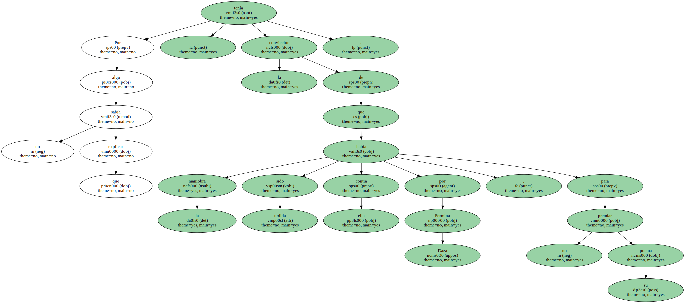
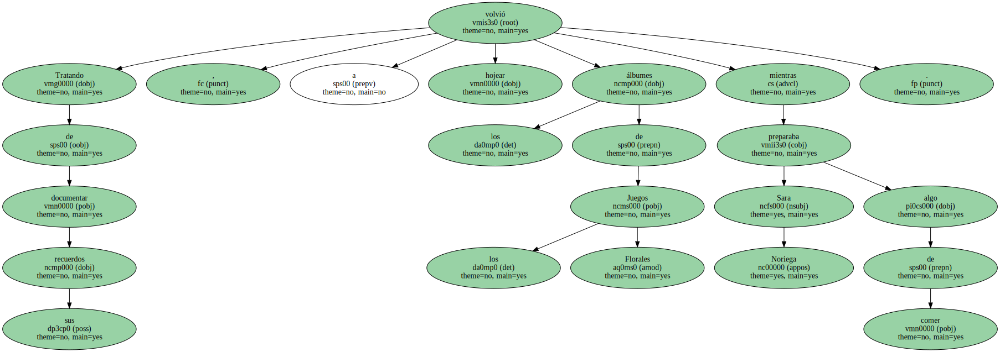
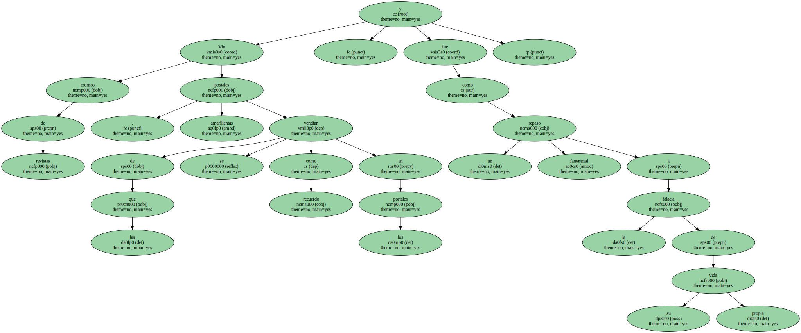
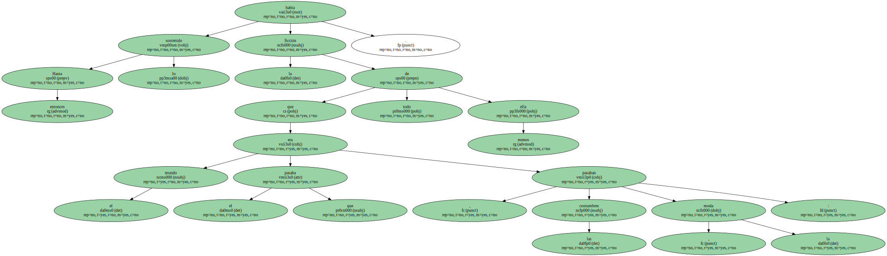
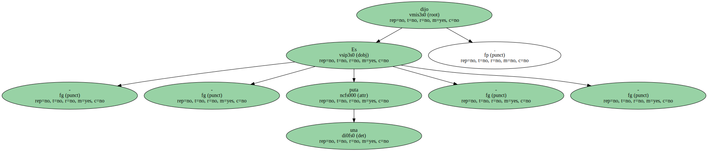
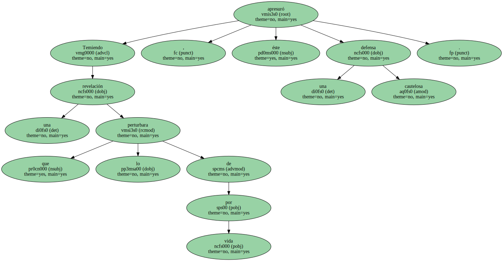
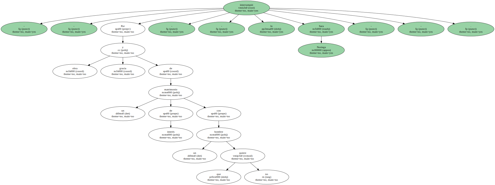
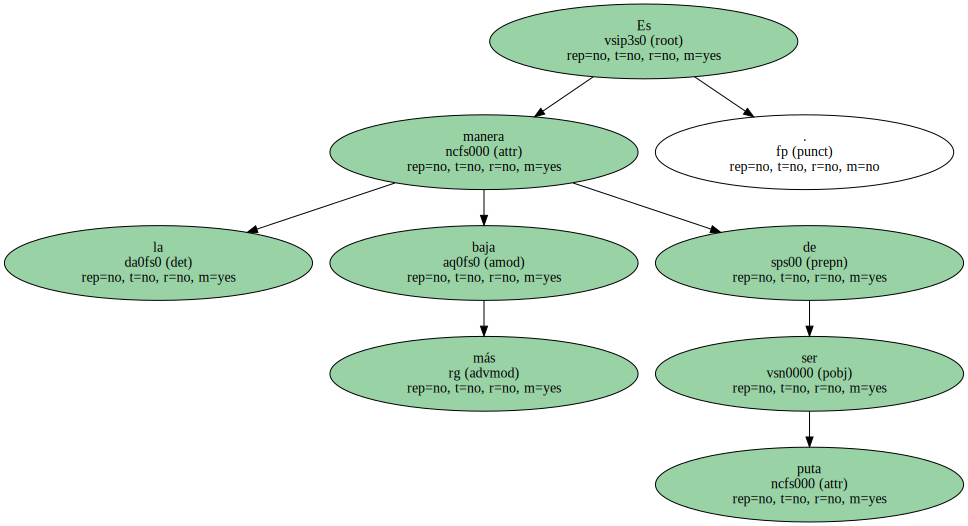
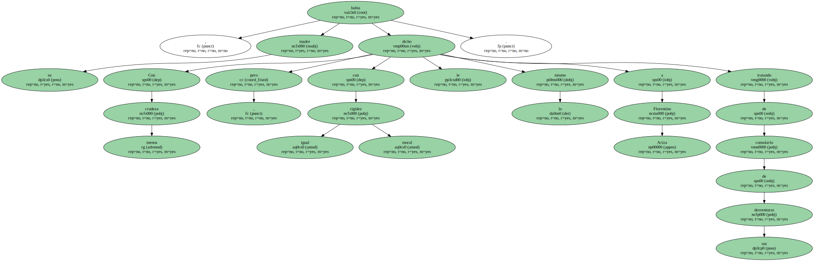
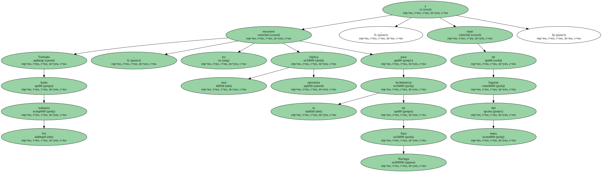

Por algo que no sabía explicar , tenía la convicción de que la maniobra había sido urdida contra ella por Fermina Daza , para no premiar su poema.
Tratando de documentar sus recuerdos , volvió a hojear los álbumes de los Juegos Florales mientras Sara Noriega preparaba algo de comer.
Vio cromos de revistas , postales amarillentas de las que se vendían como recuerdo en los portales , y fue como un repaso fantasmal a la falacia de su propia vida.
Hasta entonces lo había sostenido la ficción de que el mundo era el que pasaba , pasaban las costumbres , la moda : todo menos ella.
- - Es una puta - - dijo.
Lo dijo al pasar , viendo un grabado de Fermina Daza disfrazada de pantera negra en un baile de máscaras , y no tuvo que mencionar a nadie para que Florentino Ariza supiera de quién hablaba.

Temiendo una revelación que lo perturbara de por vida , éste apresuró una defensa cautelosa.
Advirtió que sólo conocía de lejos a Fermina Daza , que nunca habían pasado de los saludos formales y no tenía ninguna noticia de su intimidad , pero daba por cierto que era una mujer admirable , surgida de la nada y enaltecida por sus méritos propios.

- - Por obra y gracia de un matrimonio de interés con un hombre que no quiere - - lo interrumpió Sara Noriega - -.
Es la manera más baja de ser puta.
Con menos crudeza , pero con igual rigidez moral , su madre le había dicho lo mismo a Florentino Ariza tratando de consolarlo de sus desventuras.
Turbado hasta los tuétanos , no encontró una réplica oportuna para la inclemencia de Sara Noriega , y trató de fugarse del tema.
